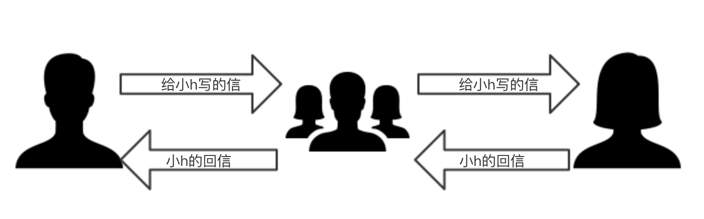
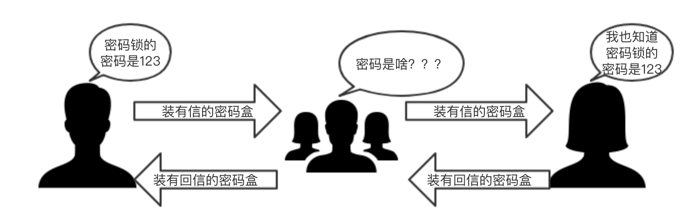
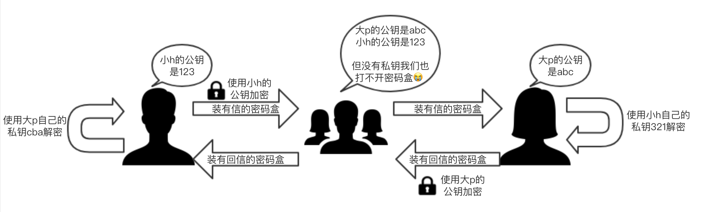
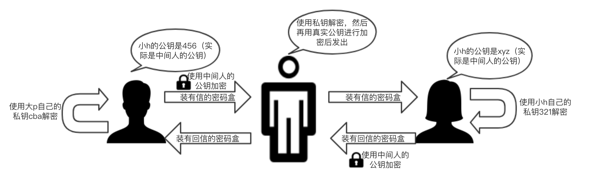
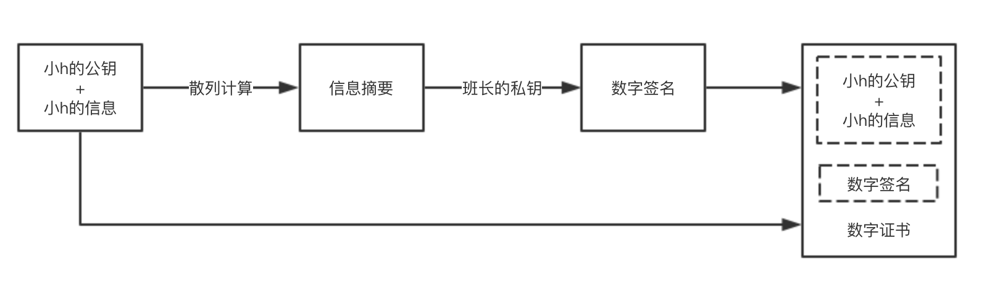
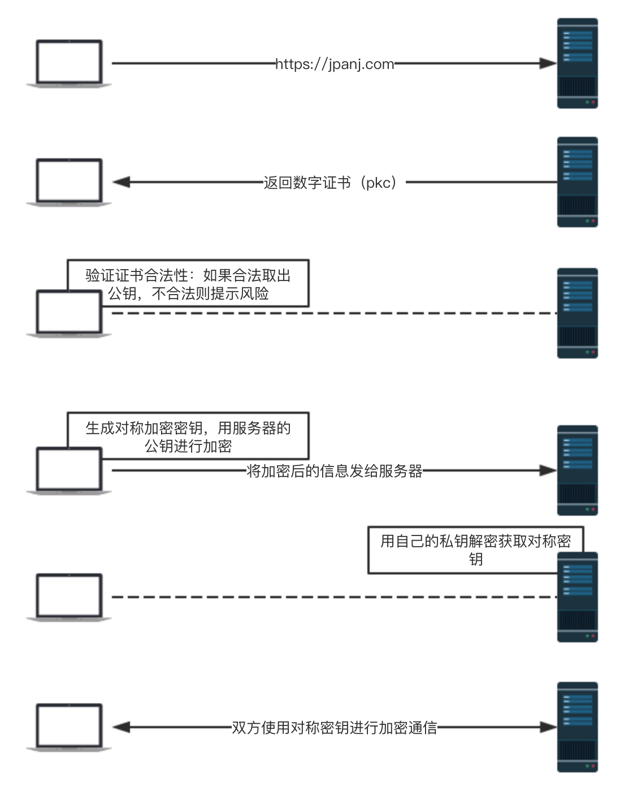

大p在刚刚开始追求小h的时候，正值风华正茂，所以比较喜欢写写书信什么的来交流彼此。由于大p的脸皮比较薄，每次写完信后，并不是把信直接交给小h，而且大部分传信的时间是在上课的时候，所以大p会把信交个离她比较近的一个同学，再由这个同学交给离她更近的同学，最后一步步的传到小h手中，小h写完回信后再使用这个过程传过来。

使用这种方式虽然浪漫，但有几个问题让大p和小h很困扰：
- 每次传递过程中都会有好奇心比较旺盛的同学先打开信看一遍然后才继续往下传
- 遇到爱搞恶作剧的同学还会修改信的内容，比如有一次我告诉小h，今晚9点操场见，但是这个同学改成了今晚7点操场见，结果导致小h提前两小时到了操场，因为这事俩人差点分手
- 甚至有更讨厌的同学，冒充大p给小h写信
以上三中情况对应的是 HTTP 协议传输时存在的风险：
窃听风险：第三方节点可以获知通信内容
篡改风险：第三方节点可以修改通信内容
冒充风险：第三方节点可以冒充他人身份参与通信
大p想到了一个对策，把信放在一个带有密码锁的盒子里，这样就由之前的直接传递小纸条改为了传递有密码锁的盒子。示意图如下：

现在对策有了，带密码锁的盒子有了，信也写好了，但另一个问题来了，密码怎么告诉小h呢，最简单的办法肯定是大p直接把密码告诉小h，但他们两个平时单独约会的时间非常少，每次独处时大p都把心思用在其他地方了，把给密码这件事忘的一干二净。另一个方法是把写有密码的信还通过之前的方法传给小h，但是这样的话中间那个传信的同学就有可能打开信看到密码，把信放在密码盒中就没有任何意义了。
因为锁子的密码安全传递问题解决不了，大p暂时否定了这个方案。
以上介绍的是对称加密算法，带有密码锁的盒子和密码分别对应的算法和密钥，常见的对称加密算法有AES、DES、3DES、RC5、RC6
因为担心信中的内容被其他人看到，两个人之间的信件交流就越来越少了，这让大p很苦恼。有一天大p在学校小卖部里看到了一种新的密码锁，这种密码锁神奇之处在于它需要配合一对密码来使用，由一个密码锁上的锁头必须由另一个密码才能解开，反之亦然。
大p立刻来了精神，买了把这样的锁回去，并且生成了两对密码。大p和小h协商好，给每对密码中的每个密码分别起个名字：公钥、私钥，公钥表示这个密码能够随意分发，让任何人得到：可以直接把写有公钥的纸条传给对方，甚至把公钥直接写在黑板上都没有问题，但是私钥只能自己知道，甚至连对方都不能告诉。
也就是说此时他们两个每人有一个属于自己的私钥。这样只需要每次写完信后，用对方的的公钥把盒子锁上，对方拿到后用自己的私钥解开盒子取出信件，写完回信后再用另一方的公钥锁上盒子即可。
假如
- 大p的公钥是abc，私钥是cba；
- 小h的公钥是123，私钥是321，流程示意图如下：

以上介绍的是非对称加密也叫公钥加密，这套密码算法包含配对的密钥对，分为加密密钥和解密密钥。发送者用加密密钥进行加密，接收者用解密密钥进行解密。加密密钥是公开的，任何人都可以获取，因此加密密钥又称为公钥（public key），解密密钥不能公开，只能自己使用，因此它又称为私钥（private key），常见的公钥加密算法有 RSA
于是两个人又开始频繁的给对方写信了，但是在慢慢使用中，他们两个都人发现了一个问题，这个密码锁的加密和解密的效率很低，简直就是写信5分钟，加/解密2小时。
后来，大p想到一个方法，他们可以结合两种密码锁，先通过非对称密码锁把之前对称密码锁的密码传给对方，两个人后边直接用对称密码锁来加密解密就可以了。
为了后边不再出什么漏洞，大p决定对这种方案进行了严格的推敲，推敲过程中他突然意识到一种可怕的情况，虽然他们两个都持有对方的公钥，但他们自己并不知道自己拿到的是不是真的就是对方的公钥，假如中间传信的人里有一个既邪恶又聪明的同学小x，他可能就会想到一种破解方法：
- 小x手中有两对他自己生成好的密钥：
- 第一对：公钥xyz，私钥zyx
- 第二对：公钥456，私钥654
当大p和小h想要获取对方的公钥时，小x拿到大p的公钥abc后记下来，但是小x却告诉小h：大p的公钥是 xyz（这是小x的公钥），反过来也是，小h的公钥也被小x拿到并且掉了包，打p拿到的也是小x生成的公钥456。
当大p写完信后用他认为是小h的公钥加密时，实际用的是小x的公钥，小x只需拿到加密的信后用自己的私钥解开看一看，可能再改改信的内容，然后再用小h的公钥把信加密后交给小h，反过来同理。

因为大p是个阴谋论者，所以他相信这样的事情一定是存在的，所以之前所有的加密方案瞬间都因为这种可能有中间人攻击的存在而崩塌了。
由于现在市面上的密码锁只有这两种，而且大p还在读高中，所以造一种可以防中间人攻击的新型加密锁对他来说难度太大了（真实情况是大p毕业参加工作后依然造不出来），大p决定找到一种方案可以让他和小h拿到的一定是对方的公钥，而不是中间人的。大p想到，既然我们可能会收到中间人的攻击，那么我们能不能也找个可靠的「中间人」来解决这个问题呢。
找班长来做这个「中间人」最合适不过了，为了防止再出其他幺蛾子，大p和班长进行了面基，班长也有一对自己的密钥，大p让班长当面把公钥给了大p，此时大p可以确定他拿到的班长的公钥一定就是班长的公钥（这个实际是根证书预装进操作系统或浏览器的过程）。
小h为了让大p（也包括其他追求者）拿到不被篡改的公钥，需要把自己的公钥交给班长，她虽然和班长没有进行面交，但班长经过一系列严格而且复杂的检查确认了这个公钥确确实实是小h的，然后班长会把小h的基本信息（比如姓名、学号）和小h的公钥放在一起，然后对以上内容做一次散列计算后得到一个信息摘要（也叫指纹），这个指纹可以保证只要班长拿到的小h的基本信息或小h的公钥有任何修改，再次散列计算后得到的指纹一定不同。
消息摘要（message digest）函数是一种用于判断数据完整性的算法，也称为散列函数或哈希函数，函数返回的值叫散列值，散列值又称为消息摘要或者指纹（fingerprint）。这种算法是一个不可逆的算法，因此你没法通过消息摘要反向推倒出消息是什么，所以它也称为单向散列函数。常用的散列算法有MD5、SHA。
再之后班长使用自己的私钥把之前计算出来的信息摘要进行了签名（实际就是用私钥对这个值进行了加密），加密后的值我们叫它数字签名，最后把数字签名和原始信息一起打包，生成了最终的数字证书，也就是说数字证书中有两块内容，一块是小h的公钥+小h基本信息组成的明文，另外一块是把明文部分进行散列计算后的值再次通过私钥加密后得到的数字签名。

之后班长把带有自己签名的证书（数字证书）交给了小h。大p找小h索要公钥时，小h只需要把这个数字证书交给他就行了，大p需要用相同的散列算法将明文部分进行计算得到一个散列值a，并且因为大p确定自己手中拿的班长的公钥是可信的，于是大p用班长的公钥对证书中的数字签名进行解密得到得到班长计算出的散列值b，散列值a和散列值b进行比对，如果相同就可以确定明文部分是没有被篡改过的，也就是说此时大p可以相信自己拿到的小h的公钥一定是可靠的了。
这也印证了一句名言：“一切计算机问题都可以通过添加中间层解决”。
上边的部分班长就是认证机构（CA），CA 把用户的姓名、组织、邮箱地址等个人信息收集起来，加上公钥，由 CA 提供数字签名生成公钥证书（Public-Key Certificate）PKC
至此，一套比较完善的数据传输方案就完成了。HTTPS（SSL/TLS）就是在这样一套流程基础之上建立起来的。
https 简化流程图如下：
